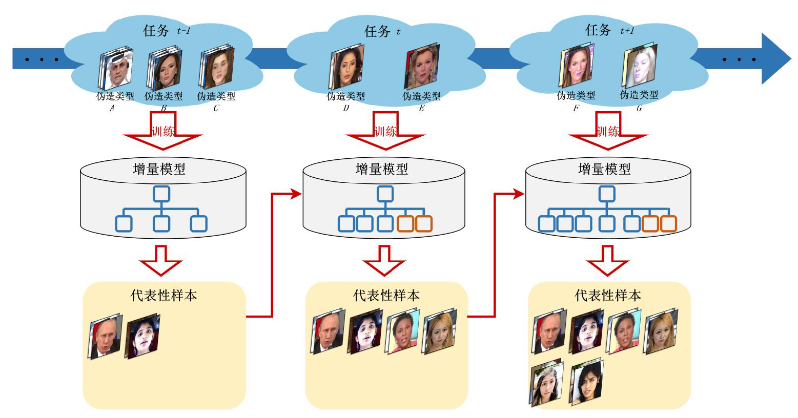

|
I am a first-year Ph.D. student in Electrical Engineering at the City University of Hong Kong (CityU), supervised by Professor Haoliang Li. Before CityU, I received my master's degree (2021-2024) at the Institute of Computing Technology, Chinese Academy of Sciences (ICT, CAS) supervised by Professor Shihong Xia, researching Face Forgery Detection and Talking Face Generation. My research interests include:
Please don't hesitate to contact me if you are interested in my research.
|
|
|
| 2024/08 | I entered the City University of Hong Kong as a Ph.D. student. |
| 2024/05 | Completed my master's theis defense. |
| 2024/04 | Invited to serve as a Reviewer for ACM MM 2024. |
| 2024/03 | Invited to serve as a PC member for WWW 2024. |
| 2023/07 | One first-authored paper got accepted by MTAP. |
| 2023/06 | One co-authored paper got accepted. |
|
|
|
Bo Ding, Zhenfeng Fan, Shuang Yang, and Shihong Xia Preprint TL;DR: We present Myportrait, a method for learning personalized neural portraits. By incorporating personalized prior from a monocular video and morphable prior from 3DMM, our framework can generate realistic portraits with personalized details. |
|

|
Bo Ding, Zhenfeng Fan, Zejun Zhao, and Shihong Xia Multimedia Tools and Applications (JCR Q2, CCF-C), 2023 Paper / Chinese Blog TL;DR: We propose a multi-branch spatio-temporal difference network for face forgery detection by capturing complementary low-level spatio-temporal features in videos, which can enhance the generalization ability of the model. |
|  |
Zejun Zhao, Zhenfeng Fan, Bo Ding, and Shihong Xia Frontiers of Data and Computing (In Chinese), 2023 Paper TL;DR: We design a face forgery detection system based on incremental learning, which reduces the training cost of the model when introducing new forgery samples. |
|
Junhao Dong, Bo Xiao, Bo Ding, and Haoyv Wang IEEE Access (JCR Q2), 2020 Paper TL;DR: We propose a general transductive ZSL method based on GANs, called GT-GAN, which introduces unlabeled unseen samples for training, to improve the performance of the generator. |
|
|
| 2024-Present |
Ph.D. in Electrical Engineering
Department of Electrical Engineering City University of Hong Kong |
| 2021-2024 |
M.S. in Computer Science and Technology
University of Chinese Academy of Sciences Cultivation Unit: Institute of Computing Technology, Chinese Academy of Sciences |
| 2017-2021 |
B.Eng. in Communication Engineering
School of Information and Communication Engineering Beijing University of Posts and Telecommunications |
|
|
| 2024 | Excellent Prize of the President Scholarship, ICT, CAS |
| 2023 | The First Prize Scholarship, ICT, CAS |
| 2022, 2023 | Outstanding Student Leader, ICT, CAS |
| 2022, 2023, 2024 | Merit Student, ICT, CAS |
| 2021 | Excellent Bachelor Thesis, BUPT |
| 2020 | Honorable Mention, Mathematical Contest In Modeling |
| 2019 | Second Prize, The Chinese Mathematics Competitions |
| 2019 | The Enterprise Scholarship, BUPT |
| 2018, 2020 | National Encouragement Scholarship, BUPT |

|